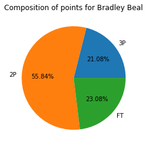
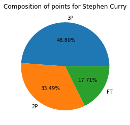
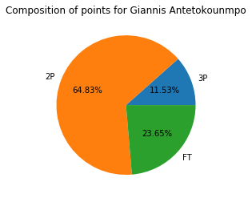
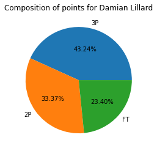
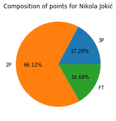
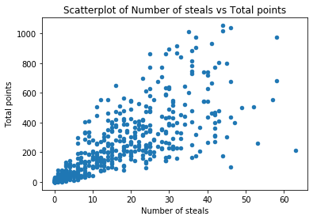
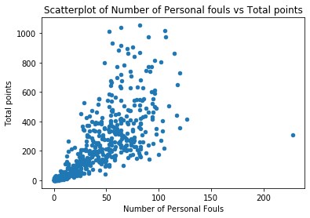
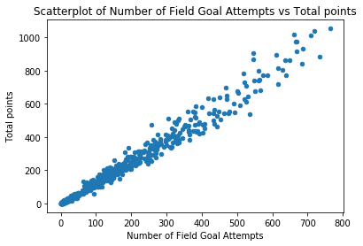
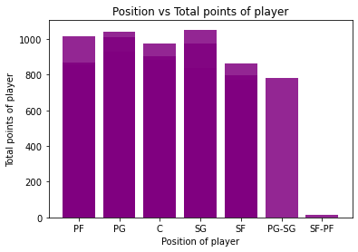

Summary
A variety of graphs are produced to explore the dataset's statistics. The first five pie charts will explore the composition of top five players and what type of points
helped them to score more. Later on, we will explore possible factors that can contribute to more total number of points for a player.
Pie charts of top 5 players





Explanation
The percentage of 2P goal points was generally the highest. Even if it was lower than the percentage
of 3P points, the margin is not the same when percentage of 2P points is higher. For example, the
percentage margin between 2P points and 3P points in player one’s points composition is 34.76%
while it is 15.31% in player two’s points composition. Even in top 4 player’s composition, the
percentage margin between 3P and 2P is 9.87% . Interestingly, the % of 3P goals is less in 3 out of 5
player’s points, but this can be explained since many players do not score more 3P goals than 2P
goals. The percentage of Free throws was never the highest in any pie chart, despite having higher
number of throws. In conclusion, if a player wants to score more points, they should at least aim for
a decent number of 2P goals.
Factors that could contribute to more number of points
 As it can be seen in this scatterplot, there is no
correlation between Age and total points of a
player. All data points are all rather vertically
scattered, therefore, there is no linear
relationship. Therefore, the age of a player does
not really affect the total points of a player.
As it can be seen in this scatterplot, there is no
correlation between Age and total points of a
player. All data points are all rather vertically
scattered, therefore, there is no linear
relationship. Therefore, the age of a player does
not really affect the total points of a player.
The scatterplot here shows a positive linear
relationship. Even though there are outliers
present, the increase in number of steals means
higher total points for a player. This shows that if a
player makes more attempts to steal from the
opposite player, it is guaranteed to generate more
points, irrespective of whether it is 2P or 3P goal
points. Therefore, a player must aim to make
decent number of steals for more points.

This scatterplot was rather surprising among
other graphs. Generally, if a player makes a greater
number of personal fouls, the chances to score
higher points reduces. But in this case, we can see
an overall positive linear relationship. Therefore, it
can be concluded that making more personal fouls
does not reduce chances of a player to score more
points. It rather depends on the skill of the player.

As expected, there is a positive linear
relationship between number of field goal
attempts and total points. This is because when a
player tries, there is a chance to score a goal and
win points. It does not really depend on the type
of the goal, as long as the player keeps on trying
to make more attempts to score a goal.
Therefore, players must make more field goal
attempts to score higher points.

The histogram here clearly shows that a player in
position SG scored the highest points among other
players. However, it must be observed that PG has
a higher range of players scoring from 0 to 1000
points in comparison to SG, which is slightly below
1000 points. Therefore, it is more likely for a player
to score more points if positioned at PG. Both PG-SG and SF-PF had less data, therefore, it is not
correct to make analysis on those positions.